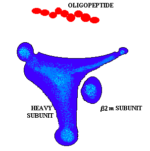

Разнообразные антигены, фрагментированные на олигопептиды,
ассоциируются с МНС молекулами для презентации Т лимфоцитам.
Связывание МНС I с нанопептидом, а MHC II - с додокапептидом


МЕХАНИЗМЫ ПРЕЗЕНТАЦИИ АНТИГЕНА КАК В ПРОФЕССИОНАЛЬНОЙ АНТИГЕН-ПРЕЗЕНТИРУЮЩЕЙ КЛЕТКЕ  , ТАК И В ЛЮБОЙ ЯДЕРНОЙ КЛЕТКЕ, НЕ ЯВЛЯЮЩЕЙСЯ ПРОФЕССИОНАЛЬНОЙ АПК
, ТАК И В ЛЮБОЙ ЯДЕРНОЙ КЛЕТКЕ, НЕ ЯВЛЯЮЩЕЙСЯ ПРОФЕССИОНАЛЬНОЙ АПК
 , ЧРЕЗВЫЧАЙНО СЛОЖНЫ. ОНИ ИМЕЮТ ИСКЛЮЧИТЕЛЬНОЕ ЗНАЧЕНИЕ ДЛЯ КООПЕРАЦИИ КЛЕТОК В ИММУННОМ ОТВЕТЕ
, ЧРЕЗВЫЧАЙНО СЛОЖНЫ. ОНИ ИМЕЮТ ИСКЛЮЧИТЕЛЬНОЕ ЗНАЧЕНИЕ ДЛЯ КООПЕРАЦИИ КЛЕТОК В ИММУННОМ ОТВЕТЕ .
.